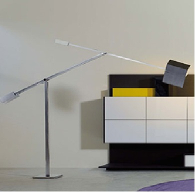

The Lamp
The lamp has been developed using the following functions:
CYLINDER //modified function
T, S, R
CUBOID
Below is provided thumbnails of the real object and of the model.

Clicking on the thumbnail of the model you can find the full code, so you can check the 3D plasm.js model of the lamp in fullscreen.